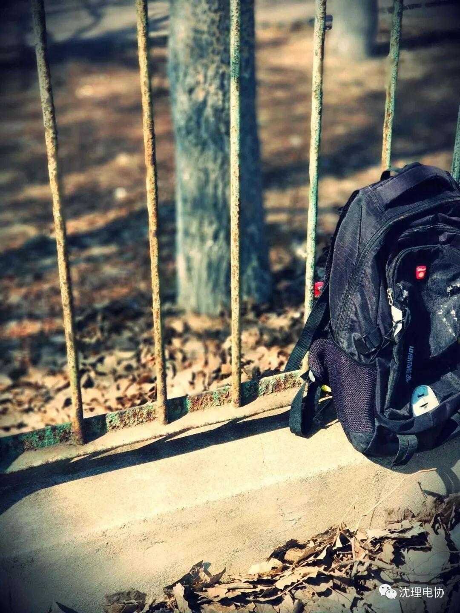
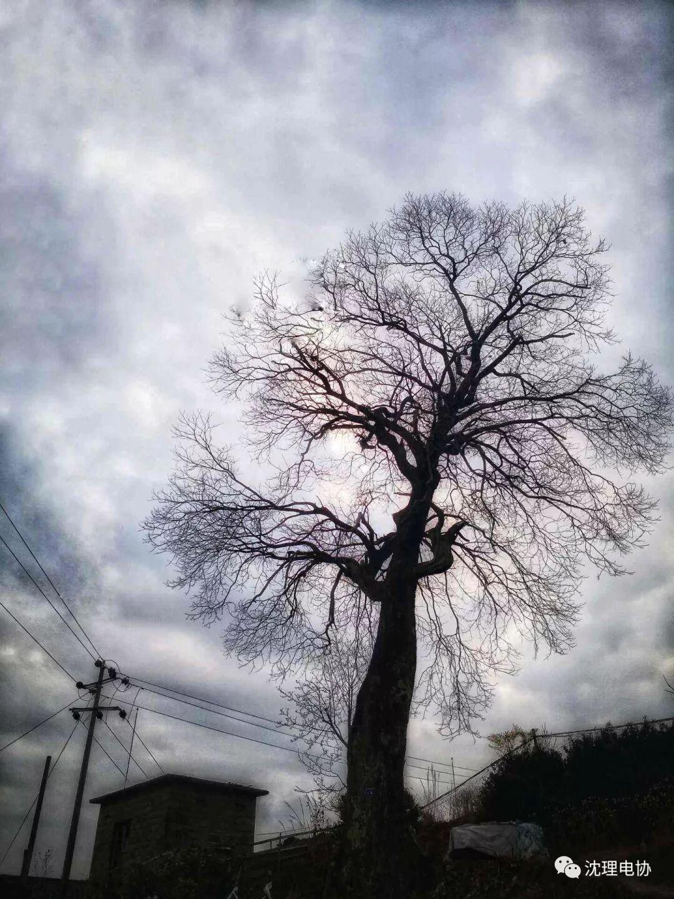
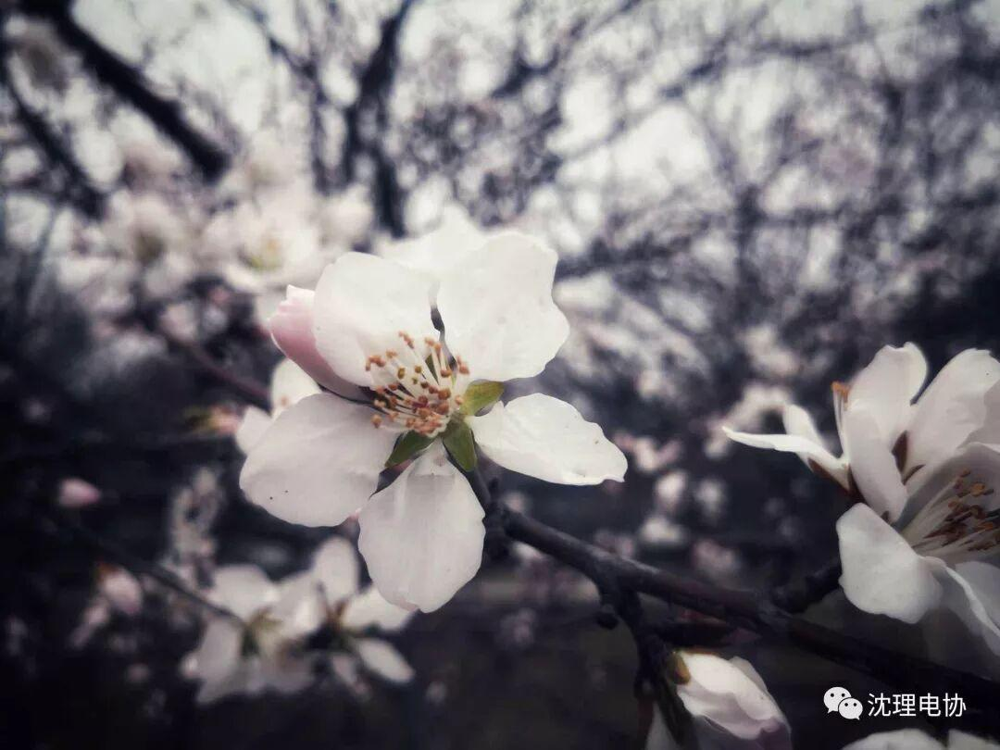

最美人间四月天。
最美人间四月天
QINGMING
清明
杜牧
清明时节雨纷纷，
路上行人欲断魂。
借问酒家何处有？
牧童遥指杏花村。
在暮春伊始，
伴着淅淅沥沥的小雨又到了这清明时节。
清明又叫作踏青节，
可见四月之初的景色真是别有一番风味。
身在南方生活了近二十年，
也见惯了南方二十载的春秋。
南方的春天有的是微风花絮和绿意，
有的是湿润的泥土气息。
而在这北方的春天，
又真是另外一种韵味。
还未长出新芽的枝丫，
还有下着雪的三月和沈理。
生活在北方的人啊，
真是幸运。
一个春天，
便见到了一整个四季。


今早起来，
发现外面下起了雨，
不过也并不惊奇。
那就是这清明这四月，
应该有的样子啊。
出门一看，
呀！天上下的是雪花，不是雨。
只是落在这土地上化成了雨。
光秃秃的枝丫上，
也冒出了一抹不寻常的景象。


我们最终都要远行，最终都要跟稚嫩的自己告别。by 海子